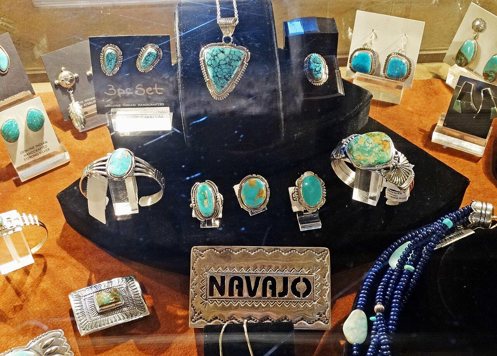

21 years, one first: Enoch Platero takes the Halstead Grant
The Navajo silversmith behind the Enoch Michael brand is the first traditional Native American jewelry artist to win the trade's best-known emerging-jeweler award — $7,500 in cash, $1,000 in supplies, and a signal the heritage market has waited two decades for.
By The Design Desk

What changed
In twenty-one years of the Halstead Grant — the Arizona supplier's annual award that has become American jewelry's best-known launching pad for emerging studio businesses — no traditional Native American jewelry artist had ever won it.
What it means
- The trade talks constantly about narrative jewelry and then sources it from mood boards. Here is the original article — a living tradition, a documented maker, a defensible price point and now a business credential the wholesale buyers understand.
- Retailers building story-led cases for 2027 should be calling Prescott for an introduction this week, before the waiting list does what waiting lists do.
Key figures
| WinnerEnoch Platero — Navajo silversmith, the Enoch Michael brand | |
|---|---|
| The firstNo traditional Native American artist had won in 21 years | |
| Purse$7,500 cash · $1,000 supplies · trip to Prescott · trophy | |
| The workSterling silver & turquoise, core pieces $500–$1,500 |
Source: The award · Halstead Grant, 21st year
A twenty-one-year streak ends on July 8
On July 8 that streak ended: Enoch Platero, the Navajo silversmith behind the Enoch Michael brand, took the 2026 grant, its $7,500 in cash, $1,000 in supplies, a trip to Prescott, a judges' feedback report and the signature trophy.
The purse · 2026 Halstead Grant, USD
Source: The award · Halstead Grant, 21st year
The price band matters as much as the technique
The work is sterling silver and turquoise, blending traditional and contemporary Navajo silversmithing, with core pieces priced between $500 and $1,500 and larger statement work above that.
The price band matters as much as the technique: it is squarely the demi-fine-to-fine gap where, as this page has reported, US independents are posting higher tickets on fewer units, and where design and story — not carat weight — justify the number on the tag.
The grant is not a beauty contest. Halstead requires applicants to submit a full business plan — marketing, competitive analysis, finances, production capacity — and judges the enterprise as much as the bench work.
Platero framed the win in exactly those terms, calling it validation of the discipline behind the business and the standards guiding the jewelry. Hilary Halstead Scott, the company's president, called the first-ever award to a traditional Native American artist a point of pride for the program.
Finalists Abigail Leaventon Jewelry, Cassidy Kaufman Jewelry and Solaris Forge each took $1,000 and supplies.
| Figure | |
|---|---|
| Winner · Platero | $7,500 cash |
| Each Finalist | $1,000 |
Finalists also take supplies; the winner adds a Prescott trip and the trophy Twenty-one years of grants, one first: what the judges hand over. Carat Capital graphics desk.
The milestone is more than symbolic
The commercial context makes the milestone more than symbolic. Authentic Native American jewelry has fought a decades-long war against imported imitations, and the market's pivot toward provenance, narrative and maker-led collections — the Vegas 2026 syllabus of story-first jewelry — plays directly to artists whose work carries both.
A juried, business-plan-vetted national award now puts an institutional stamp on one of them at exactly the moment turquoise and silverwork are running through the fashion cycle again.
The story so far
Go deeper
Method
Finalists also take supplies; the winner adds a Prescott trip and the trophy